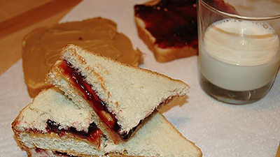

My favorite Food!
Peanut Butter Sandwich
Easy way to make it
Ingredient
Direction
- Spread peanut butter on one side of bread.
- Spreed jelly on the other side.
- Put the two pieces of bread together to form a sandwich.
For more infomation, click here.